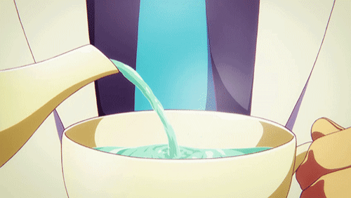

Just kidding. Take a sip of refreshing water. Or have a nice warm cup of tea to reenergize you. Hydrating yourself can help you feel more refreshed and alert. Drinking some herbal tea, such as chamomile or lavender, can also have a calming effect.
 Getting sleepy?